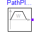
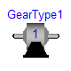
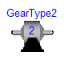
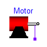
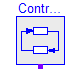
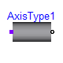
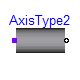
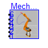
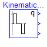
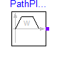
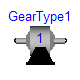
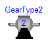
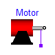
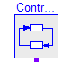
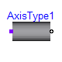
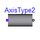
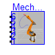
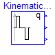
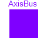
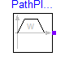
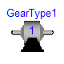
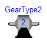
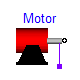
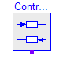
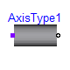
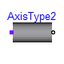
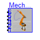
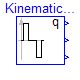
This library contains the different components of the r3 robot. Usually, there is no need to use this library directly.
| Name | Description |
|---|---|
| AxisBus | Data bus for one robot axis |
| Bus | Data bus for all axes of robot |
| PathPlanning | Generate reference angles for fastest kinematic movement |
| GearType1 | Motor inertia and gearbox model for r3 joints 1,2,3 |
| GearType2 | Motor inertia and gearbox model for r3 joints 4,5,6 |
| Motor | Motor model including current controller of r3 motors |
| Controller | |
| AxisType1 | Axis model of the r3 joints 1,2,3 |
| AxisType2 | Axis model of the r3 joints 4,5,6 |
| MechanicalStructure | Model of the mechanical part of the r3 robot (without animation) |
| KinematicPTPc | Move as fast as possible along a distance within given kinematic constraints |
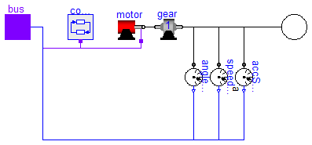
The axis model consists of the controller, the motor including current controller and the gearbox including gear elasticity and bearing friction. The only difference to the axis model of joints 4,5,6 (= model axisType2) is that elasticity and damping in the gear boxes are not neglected.
The input signals of this component are the desired angle and desired angular velocity of the joint. The reference signals have to be "smooth" (position has to be differentiable at least 2 times). Otherwise, the gear elasticity leads to significant oscillations.
Default values of the parameters are given for the axis of joint 1.
| Name | Default | Description |
|---|---|---|
| Controller | ||
| kp | 10 | gain of position controller |
| ks | 1 | gain of speed controller |
| Ts | 0.01 | time constant of integrator of speed controller [s] |
| Motor | ||
| k | 1.1616 | gain of motor |
| w | 4590 | time constant of motor |
| D | 0.6 | damping constant of motor |
| J | 0.0013 | moment of inertia of motor [kg.m2] |
| Gear | ||
| ratio | -105 | gear ratio |
| c | 43 | spring constant [N.m/rad] |
| cd | 0.005 | damper constant [N.m.s/rad] |
| Rv0 | 0.4 | viscous friction torque at zero velocity in [Nm] [N.m] |
| Rv1 | (0.13/160) | viscous friction coefficient in [Nms/rad] [N.m.s/rad] |
| peak | 1 | peak*Rv0 = maximum static friction torque (peak >= 1) |
model AxisType1 "Axis model of the r3 joints 1,2,3 "
parameter Real kp=10 "|Controller| gain of position controller";
parameter Real ks=1 "|Controller| gain of speed controller";
parameter SI.Time Ts = 0.01
"|Controller| time constant of integrator of speed controller";
parameter Real k=1.1616 "|Motor| gain of motor";
parameter Real w=4590 "|Motor| time constant of motor";
parameter Real D=0.6 "|Motor| damping constant of motor";
parameter SI.Inertia J = 0.0013 "|Motor| moment of inertia of motor";
parameter Real ratio=-105 "|Gear| gear ratio";
parameter Real c(unit="N.m/rad") = 43 "|Gear| spring constant";
parameter Real cd(unit="N.m.s/rad") = 0.005 "|Gear| damper constant";
parameter SI.Torque Rv0 = 0.4
"|Gear| viscous friction torque at zero velocity in [Nm]";
parameter Real Rv1(unit="N.m.s/rad") = (0.13/160)
"|Gear| viscous friction coefficient in [Nms/rad]";
parameter Real peak=1
"|Gear| peak*Rv0 = maximum static friction torque (peak >= 1)";
SI.Angle phi_flange(
stateSelect=StateSelect.prefer) = flange.phi;
SI.AngularVelocity w_flange(
stateSelect=StateSelect.prefer) = der(
phi_flange);
SI.AngularAcceleration a_flange=
der(w_flange);
Modelica.Mechanics.Rotational.Interfaces.Flange_b flange;
GearType1 gear(
c=c,
d=cd,
Rv0=Rv0,
Rv1=Rv1,
peak=peak,
i=ratio);
Motor motor(
J=J,
k=k,
w=w,
D=D);
RobotR3.Components.Controller controller(
kp=kp,
ks=ks,
Ts=Ts,
ratio=ratio);
RobotR3.Components.AxisBus bus;
Modelica.Mechanics.Rotational.Sensors.AngleSensor angleSensor;
Modelica.Mechanics.Rotational.Sensors.SpeedSensor speedSensor;
Modelica.Mechanics.Rotational.Sensors.AccSensor accSensor;
initial equation
// initialize in approximate steady state
phi_flange = bus.angle_ref;
w_flange = bus.speed_ref;
a_flange = 0;
equation
connect(controller.bus, bus);
connect(motor.bus, bus);
connect(gear.flange_b, flange);
connect(gear.flange_b, angleSensor.flange_a);
connect(gear.flange_b, speedSensor.flange_a);
connect(motor.flange_motor, gear.flange_a);
connect(gear.flange_b, accSensor.flange_a);
connect(angleSensor.phi, bus.angle);
connect(speedSensor.w, bus.speed);
connect(accSensor.a, bus.acceleration);
end AxisType1;
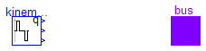
Given
- start and end angles of every axis
- maximum speed of every axis
- maximum acceleration of every axis
this component computes the fastest movement under the
given constraints. This means, that:
1. Every axis accelerates with the maximum acceleration
until the maximum speed is reached.
2. Drives with the maximum speed as long as possible.
3. Decelerates with the negative of the maximum acceleration
until rest.
The acceleration, constant velocity and deceleration
phase are determined in such a way that the movement
starts form the start angles and ends at the end angles.
The output of this block are the computed angles and the
computed angular speeds as function of time. The ordering is:
reference[1] = reference angle 1
[2] = reference speed 1
[3] = reference angle 2
[4] = reference speed 2
...
| Name | Default | Description |
|---|---|---|
| naxis | 6 | number of driven axis |
| angleBegDeg[naxis] | zeros(naxis) | start angles [deg] |
| angleEndDeg[naxis] | ones(naxis) | end angles [deg] |
| speedMax[naxis] | fill(3, naxis) | maximum axis speed [rad/s] |
| accMax[naxis] | fill(2.5, naxis) | maximum axis acceleration [rad/s2] |
| startTime | 0 | start time of movement [s] |
| swingTime | 0.5 | additional time after reference motion is in rest before simulation is stopped [s] |
model PathPlanning
"Generate reference angles for fastest kinematic movement"
import SI = Modelica.SIunits;
import Cv = Modelica.SIunits.Conversions;
parameter Integer naxis=6 "number of driven axis";
parameter Real angleBegDeg[naxis](unit="deg") = zeros(naxis) "start angles";
parameter Real angleEndDeg[naxis](unit="deg") = ones(naxis) "end angles";
parameter SI.AngularVelocity speedMax[ naxis]=fill(3, naxis)
"maximum axis speed";
parameter SI.AngularAcceleration accMax[ naxis]=fill(2.5, naxis)
"maximum axis acceleration";
parameter SI.Time startTime = 0 "start time of movement";
parameter SI.Time swingTime = 0.5
"additional time after reference motion is in rest before simulation is stopped";
Boolean motion_ref "True if reference motions of all axes is not in rest";
final parameter SI.Angle angleBeg[ :]=Cv.from_deg(angleBegDeg) "start angles";
final parameter SI.Angle angleEnd[ :]=Cv.from_deg(angleEndDeg) "end angles";
constant Real eps=100*Modelica.Constants.eps;
public
RobotR3.Components.Bus bus(
naxis=naxis);
RobotR3.Components.KinematicPTPc kinematicPTP(
q_end=angleEnd,
qd_max=speedMax,
qdd_max=accMax,
startTime=startTime,
q_begin=angleBeg);
equation
motion_ref = time <= kinematicPTP.endTime;
for i in 1:naxis loop
bus.axis[i].angle_ref = kinematicPTP.q[i];
bus.axis[i].speed_ref = kinematicPTP.qd[i];
bus.axis[i].acceleration_ref = kinematicPTP.qdd[i];
bus.axis[i].motion_ref = if abs(angleBeg[i] - angleEnd[i]) > eps then
motion_ref else false;
end for;
when time >= kinematicPTP.endTime + swingTime then
terminate("end condition reached");
end when;
end PathPlanning;
Modelica.Mechanics.MultiBody.Examples.Systems.RobotR3.Components.Bus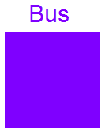
Defines connector for signalbus.
| Name | Default | Description |
|---|---|---|
| naxis | 6 |
connector Bus "Data bus for all axes of robot"
parameter Integer naxis=6;
AxisBus axis[
naxis];
end Bus;
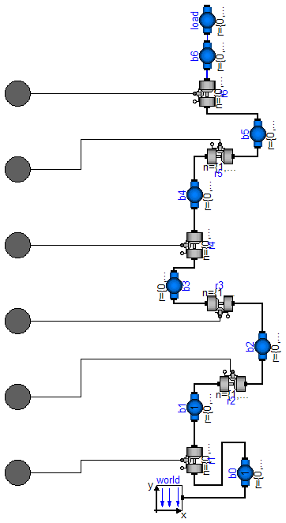
This model contains the mechanical components of the r3 robot (multibody system).
| Name | Default | Description |
|---|---|---|
| animation | true | = true, if animation shall be enabled |
| mLoad | 15 | mass of load [kg] |
| rLoad[3] | {0,0.25,0} | distance from last flange to load mass> [m] |
| g | 9.81 | gravity acceleration [m/s2] |
model MechanicalStructure
"Model of the mechanical part of the r3 robot (without animation)"
parameter Boolean animation=true "= true, if animation shall be enabled";
parameter SI.Mass mLoad = 15 "mass of load";
parameter SI.Position rLoad[ 3]={0,0.25,0}
"distance from last flange to load mass>";
parameter SI.Acceleration g = 9.81 "gravity acceleration";
SI.Angle q[
6] "joint angles";
SI.AngularVelocity qd[
6] "joint speeds";
SI.AngularAcceleration qdd[
6] "joint accelerations";
SI.Torque tau[
6] "joint driving torques";
//r0={0,0.351,0},
Modelica.Mechanics.Rotational.Interfaces.Flange_a axis1;
Modelica.Mechanics.Rotational.Interfaces.Flange_a axis2;
Modelica.Mechanics.Rotational.Interfaces.Flange_a axis3;
Modelica.Mechanics.Rotational.Interfaces.Flange_a axis4;
Modelica.Mechanics.Rotational.Interfaces.Flange_a axis5;
Modelica.Mechanics.Rotational.Interfaces.Flange_a axis6;
inner MultiBody.World world(
g=(g)*MultiBody.Frames.length(({0,-1,0})),
n={0,-1,0},
animateWorld=false,
animateGravity=false);
MultiBody.Joints.ActuatedRevolute r1(
n={0,1,0});
MultiBody.Joints.ActuatedRevolute r2(
n={1,0,0});
MultiBody.Joints.ActuatedRevolute r3(
n={1,0,0});
MultiBody.Joints.ActuatedRevolute r4(
n={0,1,0});
MultiBody.Joints.ActuatedRevolute r5(
n={1,0,0});
MultiBody.Joints.ActuatedRevolute r6(
n={0,1,0});
MultiBody.Parts.BodyShape b0(
r={0,0.351,0},
shapeType="0",
r_shape={0,0,0},
lengthDirection={1,0,0},
widthDirection={0,1,0},
length=0.225,
width=0.3,
height=0.3,
color={0,0,255},
animation=animation,
animateSphere=false);
MultiBody.Parts.BodyShape b1(
r={0,0.324,0.3},
I_22=1.16,
shapeType="1",
lengthDirection={1,0,0},
widthDirection={0,1,0},
length=0.25,
width=0.15,
height=0.2,
animation=animation,
animateSphere=false,
color={255,0,0});
MultiBody.Parts.BodyShape b2(
r={0,0.65,0},
r_CM={0.172,0.205,0},
m=56.5,
I_11=2.58,
I_22=0.64,
I_33=2.73,
I_21=-0.46,
shapeType="2",
r_shape={0,0,0},
lengthDirection={1,0,0},
widthDirection={0,1,0},
length=0.5,
width=0.2,
height=0.15,
animation=animation,
animateSphere=false,
color={255,178,0});
MultiBody.Parts.BodyShape b3(
r={0,0.414,-0.155},
r_CM={0.064,-0.034,0},
m=26.4,
I_11=0.279,
I_22=0.245,
I_33=0.413,
I_21=-0.070,
shapeType="3",
r_shape={0,0,0},
lengthDirection={1,0,0},
widthDirection={0,1,0},
length=0.15,
width=0.15,
height=0.15,
animation=animation,
animateSphere=false,
color={255,0,0});
MultiBody.Parts.BodyShape b4(
r={0,0.186,0},
r_CM={0,0,0},
m=28.7,
I_11=1.67,
I_22=0.081,
I_33=1.67,
shapeType="4",
r_shape={0,0,0},
lengthDirection={1,0,0},
widthDirection={0,1,0},
length=0.73,
width=0.1,
height=0.1,
animation=animation,
animateSphere=false,
color={255,178,0});
MultiBody.Parts.BodyShape b5(
r={0,0.125,0},
r_CM={0,0,0},
m=5.2,
I_11=1.25,
I_22=0.81,
I_33=1.53,
shapeType="5",
r_shape={0,0,0},
lengthDirection={1,0,0},
widthDirection={0,1,0},
length=0.225,
width=0.075,
height=0.1,
animation=animation,
animateSphere=false,
color={0,0,255});
MultiBody.Parts.BodyShape b6(
r={0,0,0},
r_CM={0.05,0.05,0.05},
m=0.5,
shapeType="6",
r_shape={0,0,0},
lengthDirection={1,0,0},
widthDirection={0,1,0},
animation=animation,
animateSphere=false,
color={0,0,255});
MultiBody.Parts.BodyShape load(
r_CM=rLoad,
m=mLoad,
r_shape={0,0,0},
widthDirection={1,0,0},
width=0.05,
height=0.05,
color={255,0,0},
lengthDirection=rLoad,
length=MultiBody.Frames.length(rLoad));
equation
connect(r6.frame_b, b6.frame_a);
q = {r1.phi,r2.phi,r3.phi,r4.phi,r5.phi,r6.phi};
qd = der(q);
qdd = der(qd);
tau = {r1.axis.tau,r2.axis.tau,r3.axis.tau,r4.axis.tau,r5.axis.tau,r6.
axis.tau};
connect(load.frame_a, b6.frame_b);
connect(world.frame_b, b0.frame_a);
connect(b0.frame_b, r1.frame_a);
connect(b1.frame_b, r2.frame_a);
connect(r1.frame_b, b1.frame_a);
connect(r2.frame_b, b2.frame_a);
connect(b2.frame_b, r3.frame_a);
connect(r2.axis, axis2);
connect(r1.axis, axis1);
connect(r3.frame_b, b3.frame_a);
connect(b3.frame_b, r4.frame_a);
connect(r3.axis, axis3);
connect(r4.axis, axis4);
connect(r4.frame_b, b4.frame_a);
connect(b4.frame_b, r5.frame_a);
connect(r5.axis, axis5);
connect(r5.frame_b, b5.frame_a);
connect(b5.frame_b, r6.frame_a);
connect(r6.axis, axis6);
end MechanicalStructure;
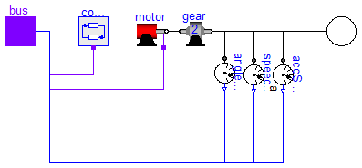
The axis model consists of the controller, the motor including current controller and the gearbox including gear elasticity and bearing friction. The only difference to the axis model of joints 4,5,6 (= model axisType2) is that elasticity and damping in the gear boxes are not neglected.
The input signals of this component are the desired angle and desired angular velocity of the joint. The reference signals have to be "smooth" (position has to be differentiable at least 2 times). Otherwise, the gear elasticity leads to significant oscillations.
Default values of the parameters are given for the axis of joint 1.
| Name | Default | Description |
|---|---|---|
| Controller | ||
| kp | 10 | gain of position controller |
| ks | 1 | gain of speed controller |
| Ts | 0.01 | time constant of integrator of speed controller [s] |
| Motor | ||
| k | 1.1616 | gain of motor |
| w | 4590 | time constant of motor |
| D | 0.6 | damping constant of motor |
| J | 0.0013 | moment of inertia of motor [kg.m2] |
| Gear | ||
| ratio | -105 | gear ratio |
| Rv0 | 0.4 | viscous friction torque at zero velocity in [Nm] [N.m] |
| Rv1 | (0.13/160) | viscous friction coefficient in [Nms/rad] [N.m.s/rad] |
| peak | 1 | peak*Rv0 = maximum static friction torque (peak >= 1) |
model AxisType2 "Axis model of the r3 joints 4,5,6 "
parameter Real kp=10 "|Controller| gain of position controller";
parameter Real ks=1 "|Controller| gain of speed controller";
parameter SI.Time Ts = 0.01
"|Controller| time constant of integrator of speed controller";
parameter Real k=1.1616 "|Motor| gain of motor";
parameter Real w=4590 "|Motor| time constant of motor";
parameter Real D=0.6 "|Motor| damping constant of motor";
parameter SI.Inertia J = 0.0013 "|Motor| moment of inertia of motor";
parameter Real ratio=-105 "|Gear| gear ratio";
parameter SI.Torque Rv0 = 0.4
"|Gear| viscous friction torque at zero velocity in [Nm]";
parameter Real Rv1(unit="N.m.s/rad") = (0.13/160)
"|Gear| viscous friction coefficient in [Nms/rad]";
parameter Real peak=1
"|Gear| peak*Rv0 = maximum static friction torque (peak >= 1)";
SI.Angle phi_flange(
stateSelect=StateSelect.prefer) = flange.phi;
SI.AngularVelocity w_flange(
stateSelect=StateSelect.prefer) = der(
phi_flange);
SI.AngularAcceleration a_flange=
der(w_flange);
Modelica.Mechanics.Rotational.Interfaces.Flange_b flange;
GearType2 gear(
Rv0=Rv0,
Rv1=Rv1,
peak=peak,
i=ratio);
Motor motor(
J=J,
k=k,
w=w,
D=D);
RobotR3.Components.Controller controller(
kp=kp,
ks=ks,
Ts=Ts,
ratio=ratio);
RobotR3.Components.AxisBus bus;
Modelica.Mechanics.Rotational.Sensors.AngleSensor angleSensor;
Modelica.Mechanics.Rotational.Sensors.SpeedSensor speedSensor;
Modelica.Mechanics.Rotational.Sensors.AccSensor accSensor;
initial equation
// initialize in approximate steady state
phi_flange = bus.angle_ref;
w_flange = bus.speed_ref;
a_flange = 0;
equation
connect(controller.bus, bus);
connect(motor.bus, bus);
connect(gear.flange_b, flange);
connect(gear.flange_b, angleSensor.flange_a);
connect(gear.flange_b, speedSensor.flange_a);
connect(motor.flange_motor, gear.flange_a);
connect(gear.flange_b, accSensor.flange_a);
connect(angleSensor.phi, bus.angle);
connect(speedSensor.w, bus.speed);
connect(accSensor.a, bus.acceleration);
end AxisType2;
Defines connector for signalbus.
connector AxisBus "Data bus for one robot axis"
import Modelica.Blocks.Interfaces;
Interfaces.BooleanSignal motion_ref
"true, if reference motion is not in rest";
Interfaces.RealSignal angle_ref(
redeclare type SignalType = SI.Angle) "reference angle of axis flange";
Interfaces.RealSignal angle(
redeclare type SignalType = SI.Angle) "angle of axis flange";
Interfaces.RealSignal speed_ref(
redeclare type SignalType = SI.AngularVelocity) "reference speed of axis flange";
Interfaces.RealSignal speed(
redeclare type SignalType = SI.AngularVelocity) "speed of axis flange";
Interfaces.RealSignal acceleration_ref(
redeclare type SignalType = SI.AngularAcceleration) "reference acceleration of axis flange";
Interfaces.RealSignal acceleration(
redeclare type SignalType = SI.AngularAcceleration) "acceleration of axis flange";
Interfaces.RealSignal current_ref(
redeclare type SignalType = SI.Current) "reference current of motor";
Interfaces.RealSignal current(
redeclare type SignalType = SI.Current) "current of motor";
Interfaces.RealSignal motorAngle(
redeclare type SignalType = SI.Angle) "angle of motor flange";
Interfaces.RealSignal motorSpeed(
redeclare type SignalType = SI.AngularVelocity) "speed of motor flange";
end AxisBus;
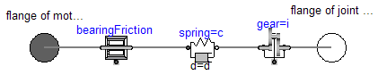
Models the gearbox used in the first three joints with all its effects, like elasticity and friction. Coulomb friction is approximated by a friction element acting at the "motor"-side. In reality, bearing friction should be also incorporated at the driven side of the gearbox. However, this would require considerable more effort for the measurement of the friction parameters. Default values for all parameters are given for joint 1. Model relativeStates is used to define the relative angle and relative angular velocity across the spring (=gear elasticity) as state variables. The reason is, that a default initial value of zero of these states makes always sense. If the absolute angle and the absolute angular velocity of model Jmotor would be used as states, and the load angle (= joint angle of robot) is NOT zero, one has always to ensure that the initial values of the motor angle and of the joint angle are modified correspondingly. Otherwise, the spring has an unrealistic deflection at initial time. Since relative quantities are used as state variables, this simplifies the definition of initial values considerably.
| Name | Default | Description |
|---|---|---|
| i | -105 | gear ratio |
| c | 43 | spring constant [N.m/rad] |
| d | 0.005 | damper constant [N.m.s/rad] |
| Rv0 | 0.4 | viscous friction torque at zero velocity [N.m] |
| Rv1 | (0.13/160) | viscous friction coefficient (R=Rv0+Rv1*abs(qd)) [N.m.s/rad] |
| peak | 1 | peak*Rv0 = maximum static friction torque (peak >= 1) |
model GearType1
"Motor inertia and gearbox model for r3 joints 1,2,3 "
extends Modelica.Mechanics.Rotational.Interfaces.TwoFlanges;
parameter Real i=-105 "gear ratio";
parameter Real c(unit="N.m/rad") = 43 "spring constant";
parameter Real d(unit="N.m.s/rad") = 0.005 "damper constant";
parameter SI.Torque Rv0 = 0.4 "viscous friction torque at zero velocity";
parameter Real Rv1(unit="N.m.s/rad") = (0.13/160)
"viscous friction coefficient (R=Rv0+Rv1*abs(qd))";
parameter Real peak=1 "peak*Rv0 = maximum static friction torque (peak >= 1)";
SI.AngularAcceleration a_rel=
der(spring.w_rel)
"Relative angular acceleration of spring";
Modelica.Mechanics.Rotational.IdealGear gear(
ratio=i);
Modelica.Mechanics.Rotational.SpringDamper spring(
c=c, d=d);
Modelica.Mechanics.Rotational.BearingFriction bearingFriction(
tau_pos=[0,
Rv0; 1, Rv0 + Rv1]);
equation
connect(spring.flange_b, gear.flange_a);
connect(bearingFriction.flange_b, spring.flange_a);
connect(gear.flange_b, flange_b);
connect(bearingFriction.flange_a, flange_a);
initial equation
spring.w_rel = 0;
a_rel = 0;
end GearType1;
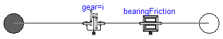
The elasticity and damping in the gearboxes of the outermost three joints of the robot is neglected. Default values for all parameters are given for joint 4.
| Name | Default | Description |
|---|---|---|
| i | -99 | gear ratio |
| Rv0 | 21.8 | viscous friction torque at zero velocity [N.m] |
| Rv1 | 9.8 | viscous friction coefficient in [Nms/rad] (R=Rv0+Rv1*abs(qd)) |
| peak | (26.7/21.8) | peak*Rv0 = maximum static friction torque (peak >= 1) |
model GearType2
"Motor inertia and gearbox model for r3 joints 4,5,6 "
extends Modelica.Mechanics.Rotational.Interfaces.TwoFlanges;
parameter Real i=-99 "gear ratio";
parameter SI.Torque Rv0 = 21.8 "viscous friction torque at zero velocity";
parameter Real Rv1=9.8
"viscous friction coefficient in [Nms/rad] (R=Rv0+Rv1*abs(qd))";
parameter Real peak=(26.7/21.8)
"peak*Rv0 = maximum static friction torque (peak >= 1)";
Modelica.Mechanics.Rotational.IdealGear gear(
ratio=i);
Modelica.Mechanics.Rotational.BearingFriction bearingFriction(
tau_pos=[0,
Rv0; 1, Rv0 + Rv1], peak=peak);
equation
connect(gear.flange_b, bearingFriction.flange_a);
connect(bearingFriction.flange_b, flange_b);
connect(gear.flange_a, flange_a);
end GearType2;
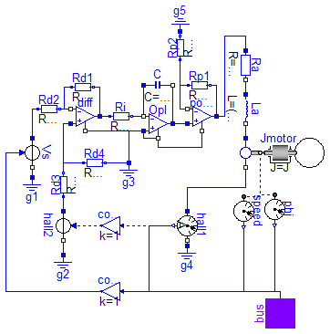
Default values are given for the motor of joint 1. The input of the motor is the desired current (the actual current is proportional to the torque produced by the motor).
| Name | Default | Description |
|---|---|---|
| J | 0.0013 | moment of inertia of motor [kg.m2] |
| k | 1.1616 | gain of motor |
| w | 4590 | time constant of motor |
| D | 0.6 | damping constant of motor |
| w_max | 315 | maximum speed of motor [rad/s] |
| i_max | 9 | maximum current of motor [A] |
model Motor "Motor model including current controller of r3 motors "
extends Modelica.Icons.MotorIcon;
parameter SI.Inertia J = 0.0013 "moment of inertia of motor";
parameter Real k=1.1616 "gain of motor";
parameter Real w=4590 "time constant of motor";
parameter Real D=0.6 "damping constant of motor";
parameter SI.AngularVelocity w_max = 315 "maximum speed of motor";
parameter SI.Current i_max = 9 "maximum current of motor";
Modelica.Mechanics.Rotational.Interfaces.Flange_b flange_motor;
Modelica.Electrical.Analog.Sources.SignalVoltage Vs;
Modelica.Electrical.Analog.Ideal.IdealOpAmp diff;
Modelica.Electrical.Analog.Ideal.IdealOpAmp power;
Modelica.Electrical.Analog.Basic.EMF emf(
k=k);
Modelica.Electrical.Analog.Basic.Inductor La(
L=(250/(2*D*w)));
Modelica.Electrical.Analog.Basic.Resistor Ra(
R=250);
Modelica.Electrical.Analog.Basic.Resistor Rd2(
R=100);
Modelica.Electrical.Analog.Basic.Capacitor C(
C=0.004*D/w);
Modelica.Electrical.Analog.Ideal.IdealOpAmp OpI;
Modelica.Electrical.Analog.Basic.Resistor Rd1(
R=100);
Modelica.Electrical.Analog.Basic.Resistor Ri(
R=10);
Modelica.Electrical.Analog.Basic.Resistor Rp1(
R=200);
Modelica.Electrical.Analog.Basic.Resistor Rp2(
R=50);
Modelica.Electrical.Analog.Basic.Resistor Rd4(
R=100);
Modelica.Electrical.Analog.Sources.SignalVoltage hall2;
Modelica.Electrical.Analog.Basic.Resistor Rd3(
R=100);
Modelica.Electrical.Analog.Basic.Ground g1;
Modelica.Electrical.Analog.Basic.Ground g2;
Modelica.Electrical.Analog.Basic.Ground g3;
Modelica.Electrical.Analog.Sensors.CurrentSensor hall1;
Modelica.Electrical.Analog.Basic.Ground g4;
Modelica.Electrical.Analog.Basic.Ground g5;
Modelica.Mechanics.Rotational.Sensors.AngleSensor phi;
Modelica.Mechanics.Rotational.Sensors.SpeedSensor speed;
Modelica.Mechanics.Rotational.Inertia Jmotor(
J=J);
RobotR3.Components.AxisBus bus;
Blocks.Math.Gain convert1;
Blocks.Math.Gain convert2;
equation
connect(La.n, emf.p);
connect(Ra.n, La.p);
connect(Rd2.n, diff.n1);
connect(C.n, OpI.p2);
connect(OpI.p2, power.p1);
connect(Vs.p, Rd2.p);
connect(diff.n1, Rd1.p);
connect(Rd1.n, diff.p2);
connect(diff.p2, Ri.p);
connect(Ri.n, OpI.n1);
connect(OpI.n1, C.p);
connect(power.n1, Rp1.p);
connect(power.p2, Rp1.n);
connect(Rp1.p, Rp2.p);
connect(power.p2, Ra.p);
connect(Rd3.p, hall2.p);
connect(Rd3.n, diff.p1);
connect(Rd3.n, Rd4.p);
connect(Vs.n, g1.p);
connect(g2.p, hall2.n);
connect(Rd4.n, g3.p);
connect(g3.p, OpI.p1);
connect(g5.p, Rp2.n);
connect(emf.n, hall1.p);
connect(hall1.n, g4.p);
connect(emf.flange_b, phi.flange_a);
connect(emf.flange_b, speed.flange_a);
connect(OpI.n2, power.n2);
connect(OpI.p1, OpI.n2);
connect(OpI.p1, diff.n2);
connect(Jmotor.flange_a, emf.flange_b);
connect(Jmotor.flange_b, flange_motor);
initial equation
// initialize motor in steady state
der(C.v) = 0;
der(La.i) = 0;
equation
connect(phi.phi, bus.motorAngle);
connect(speed.w, bus.motorSpeed);
connect(hall1.i, bus.current);
connect(hall1.i, convert1.u);
connect(convert1.y, hall2.v);
connect(convert2.u, bus.current_ref);
connect(convert2.y, Vs.v);
end Motor;
| Name | Default | Description |
|---|---|---|
| kp | 10 | gain of position controller |
| ks | 1 | gain of speed controller |
| Ts | 0.01 | time constant of integrator of speed controller [s] |
| ratio | 1 | gear ratio of gearbox |
model Controller
parameter Real kp=10 "gain of position controller";
parameter Real ks=1 "gain of speed controller";
parameter SI.Time Ts = 0.01 "time constant of integrator of speed controller";
parameter Real ratio=1 "gear ratio of gearbox";
Modelica.Blocks.Math.Gain gain1(
k=ratio);
Modelica.Blocks.Continuous.PI PI(
k=ks, T=Ts);
Modelica.Blocks.Math.Feedback feedback1;
Modelica.Blocks.Math.Gain P(
k=kp);
Modelica.Blocks.Math.Add3 add3(
k3=-1);
Modelica.Blocks.Math.Gain gain2(
k=ratio);
RobotR3.Components.AxisBus bus;
equation
connect(gain1.y, feedback1.u1);
connect(feedback1.y, P.u);
connect(P.y, add3.u2);
connect(gain2.y, add3.u1);
connect(add3.y, PI.u);
connect(gain2.u, bus.speed_ref);
connect(gain1.u, bus.angle_ref);
connect(feedback1.u2, bus.motorAngle);
connect(add3.u3, bus.motorSpeed);
connect(PI.y, bus.current_ref);
end Controller;
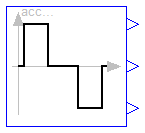
The goal is to move as fast as possible along a distance deltaq under given kinematical constraints. The distance can be a positional or angular range. In robotics such a movement is called PTP (Point-To-Point). This source block generates the acceleration qdd of this signal as output. After integrating the output two times, the position q is obtained. The signal is constructed in such a way that it is not possible to move faster, given the maximally allowed velocity qd_max and the maximally allowed acceleration qdd_max.
If several distances are given (vector deltaq has more than 1 element), an acceleration output vector is constructed such that all signals are in the same periods in the acceleration, constant velocity and deceleration phase. This means that only one of the signals is at its limits whereas the others are sychnronized in such a way that the end point is reached at the same time instant.
This element is useful to generate a reference signal for a controller which controls a drive train or in combination with model Modelica.Mechanics.Rotational.Accelerate to drive a flange according to a given acceleration.
Release Notes:
| Name | Default | Description |
|---|---|---|
| q_begin[:] | {0} | Start position |
| q_end[:] | {1} | End position |
| qd_max[:] | {1} | Maximum velocities der(q) |
| qdd_max[:] | {1} | Maximum accelerations der(qd) |
| startTime | 0 | Time instant at which movement starts [s] |
block KinematicPTPc
"Move as fast as possible along a distance within given kinematic constraints"
parameter Real q_begin[:]={0} "Start position";
parameter Real q_end[:]={1} "End position";
parameter Real qd_max[:](final min=Modelica.Constants.SMALL) = {1}
"Maximum velocities der(q)";
parameter Real qdd_max[:](final min=Modelica.Constants.SMALL) = {1}
"Maximum accelerations der(qd)";
parameter SI.Time startTime = 0 "Time instant at which movement starts";
extends Modelica.Blocks.Interfaces.BlockIcon;
final parameter Integer nout=max([size(q_begin, 1); size(q_end, 1); size(
qd_max, 1); size(qdd_max, 1)]);
output SI.Time endTime "Time instant at which movement stops";
protected
parameter Real p_q_begin[nout]=(if size(q_begin, 1) == 1 then ones(nout)*
q_begin[1] else q_begin);
parameter Real p_q_end[nout]=(if size(q_end, 1) == 1 then ones(nout)*
q_end[1] else q_end);
parameter Real p_qd_max[nout]=(if size(qd_max, 1) == 1 then ones(nout)*
qd_max[1] else qd_max);
parameter Real p_qdd_max[nout]=(if size(qdd_max, 1) == 1 then ones(nout)*
qdd_max[1] else qdd_max);
parameter Real p_deltaq[nout]=p_q_end - p_q_begin;
constant Real eps=10*Modelica.Constants.eps;
Real sd_max_inv;
Real sdd_max_inv;
Real sd_max;
Real sdd_max;
Real sdd;
Real aux1[nout];
Real aux2[nout];
SI.Time Ta1;
SI.Time Ta2;
SI.Time Tv;
SI.Time Te;
Boolean noWphase;
SI.Time Ta1s;
SI.Time Ta2s;
SI.Time Tvs;
SI.Time Tes;
Real sd_max2;
Real s1;
Real s2;
Real s3;
Real s;
Real sd;
Real constraintResidue;
Real r_s;
Real r_sd;
Real r_sdd;
Real constraintResidue_d;
Real constraintResidue_dd;
public
Modelica.Blocks.Interfaces.RealOutput q[
nout];
Modelica.Blocks.Interfaces.RealOutput qd[
nout];
Modelica.Blocks.Interfaces.RealOutput qdd[
nout];
equation
for i in 1:nout loop
aux1[i] = p_deltaq[i]/p_qd_max[i];
aux2[i] = p_deltaq[i]/p_qdd_max[i];
end for;
sd_max_inv = max(abs(aux1));
sdd_max_inv = max(abs(aux2));
if sd_max_inv <= eps or sdd_max_inv <= eps then
sd_max = 0;
sdd_max = 0;
Ta1 = 0;
Ta2 = 0;
noWphase = false;
Tv = 0;
Te = 0;
Ta1s = 0;
Ta2s = 0;
Tvs = 0;
Tes = 0;
sd_max2 = 0;
s1 = 0;
s2 = 0;
s3 = 0;
r_sdd = 0;
r_sd = 0;
r_s = 0;
else
sd_max = 1/max(abs(aux1));
sdd_max = 1/max(abs(aux2));
Ta1 = sqrt(1/sdd_max);
Ta2 = sd_max/sdd_max;
noWphase = Ta2 >= Ta1;
Tv = if noWphase then Ta1 else 1/sd_max;
Te = if noWphase then Ta1 + Ta1 else Tv + Ta2;
Ta1s = Ta1 + startTime;
Ta2s = Ta2 + startTime;
Tvs = Tv + startTime;
Tes = Te + startTime;
sd_max2 = sdd_max*Ta1;
s1 = sdd_max*(if noWphase then Ta1*Ta1 else Ta2*Ta2)/2;
s2 = s1 + (if noWphase then sd_max2*(Te - Ta1) - (sdd_max/2)*(Te - Ta1)
^2 else sd_max*(Tv - Ta2));
s3 = s2 + sd_max*(Te - Tv) - (sdd_max/2)*(Te - Tv)*(Te - Tv);
if time < startTime then
r_sdd = 0;
r_sd = 0;
r_s = 0;
elseif noWphase then
if time < Ta1s then
r_sdd = sdd_max;
r_sd = sdd_max*(time - startTime);
r_s = (sdd_max/2)*(time - startTime)*(time - startTime);
elseif time < Tes then
r_sdd = -sdd_max;
r_sd = sd_max2 - sdd_max*(time - Ta1s);
r_s = s1 + sd_max2*(time - Ta1s) - (sdd_max/2)*(time - Ta1s)*(time
- Ta1s);
else
r_sdd = 0;
r_sd = 0;
r_s = s2;
end if;
elseif time < Ta2s then
r_sdd = sdd_max;
r_sd = sdd_max*(time - startTime);
r_s = (sdd_max/2)*(time - startTime)*(time - startTime);
elseif time < Tvs then
r_sdd = 0;
r_sd = sd_max;
r_s = s1 + sd_max*(time - Ta2s);
elseif time < Tes then
r_sdd = -sdd_max;
r_sd = sd_max - sdd_max*(time - Tvs);
r_s = s2 + sd_max*(time - Tvs) - (sdd_max/2)*(time - Tvs)*(time - Tvs);
else
r_sdd = 0;
r_sd = 0;
r_s = s3;
end if;
end if;
// acceleration
qdd = p_deltaq*sdd;
qd = p_deltaq*sd;
q = p_q_begin + p_deltaq*s;
endTime = Tes;
sd = der(s);
sdd = der(sd);
constraintResidue = r_s - s;
constraintResidue_d = r_sd - sd;
constraintResidue_dd = r_sdd - sdd;
constrain(constraintResidue, constraintResidue_d, constraintResidue_dd);
end KinematicPTPc;